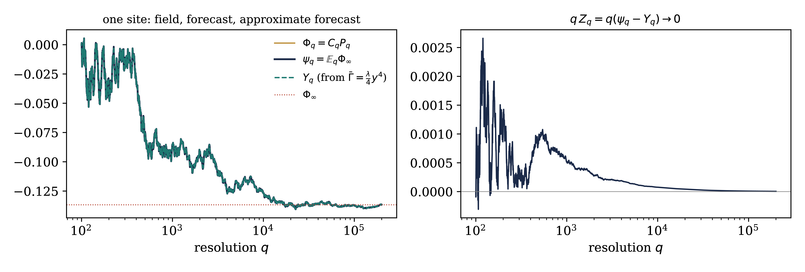

A Constructive Introduction to Quantum Field Theory
\(\Phi^4_3\) on the torus I: the Wetterich FBSDE and renormalisation
Massimiliano Gubinelli | University of Oxford
SISSA lectures, Lecture 5 (provisional) — notes: Lecture 5, §§12–14
Lecture 4. Interacting field at resolution \(t\) = solution of the FBSDE
In the forecast coordinate \(\psi_t =\mathbb{E}_t \Phi_T\) the forward equation has no drift and the trees are integrated exactly; the backward half is the Wetterich equation.
Lectures 5–7. Construct \(\Phi^4_3\) on \(\mathbb{T}^3\) with this FBSDE:
deterministic renormalisation: an explicit approximate effective action \(\bar{\Gamma}_q\) and its defect (today);
a priori estimates for the exact FBSDE in the coordinates of \(\bar{\Gamma}_q\), uniform in the lattice (Lecture 6);
removing the cutoffs and identifying the limit (Lecture 7).
G., course notes on \(\Phi^4_3\) via FBSDEs (2026); Bailleul–Chevyrev–G. (in prep.)
Large mass \(m^2 = q_0\) compared with the coupling: \(\gamma q_0^{- 1 / 2} \ll 1\), \(\gamma = 3 \lambda\). A weak dimensionless coupling on a fixed torus.
Tightness of the lattice measures in \(H^{- s}\), \(s > \frac{1}{2}\).
A subsequential limit: an FBSDE on \([q_0, \infty)\), driven by a Brownian motion obtained as the limit of the lattice innovations, whose terminal value has the limiting law.
A renormalised integration by parts formula.
Not proved: uniqueness, OS axioms, infinite volume.
The guiding principle
Do not estimate \(\Phi\) and \(F\). Estimate the error of an explicit approximate forecast. UV stability \(=\) this error is small uniformly in the lattice.
Other constructions: Glimm–Jaffe 1973; Feldman–Osterwalder 1976; Brydges–Fröhlich–Sokal 1983; Barashkov–G. 2020; G.–Hofmanová 2021
The problem and the exact FBSDE
Lecture 5
\(\Lambda_N = (N^{- 1} \mathbb{Z}/\mathbb{Z})^3\), \(\int f = N^{- 3} \sum_x f (x)\), \(\Delta = \Delta_N\) nearest neighbour. Resolution parameter \(q = q_0 + t^2 \in [q_0, \infty)\):
In Lecture 3 notation (\(T = \infty\), and \(\dot{Q} = \partial_q Q_q\)):
Free resolvents (uniform in \(N\))
\(C_q \ge 0\) as a kernel, \(C_q \mathbb{1} = q^{- 1} \mathbb{1}\), \(\|C_q \|_{p \to p} = q^{- 1}\),
The bubble \(a_2 (q)\) is the coincident-point variance of the shell at resolution \(q\).
\(\gamma = 3 \lambda\), so \(D^2 U (y) = \gamma y^2\) (not the counterterm \(\gamma_T\) of Lecture 4). The Wick ordering is now part of \(\mu_N\).
Theorem.
The bounds behind (a), (b) are bounds on the error \(Z\) of an approximate forecast, uniform in \(N\): UV stability.
Fixed \(N\). Hidden field \(\Phi_{\infty} \sim \nu_N\), independent Brownian motion \(B\), observations
Proposition. With \(\mathcal{K}_q (p) = \log \int \mathrm{e}^{\langle p, \varphi \rangle - \frac{q - q_0}{2} \| \varphi \|^2} \nu_N (\mathrm{d} \varphi)\):
forecast \(\psi_q =\mathbb{E}_q \Phi_{\infty} = D\mathcal{K}_q (P_q)\), covariance \(\text{Cov}_q = D^2 \mathcal{K}_q (P_q) > 0\);
innovation \(W_q = P_q - \int_{q_0}^q \psi_s \mathrm{d} s\) is an \((\mathcal{F}_q)\)-Brownian motion;
\(\mathrm{d} \psi_q = \text{Cov}_q \hspace{0.17em} \mathrm{d} W_q\), and \(\partial_q \mathcal{K}+ \frac{1}{2} \text{Tr} D^2 \mathcal{K}+ \frac{1}{2} \|D\mathcal{K}\|^2 = 0\).
Proof: Bayes with likelihood \(\exp \{\langle P_q, \varphi \rangle - \frac{q - q_0}{2} \| \varphi \|^2 \}\); Lévy's characterisation; Itô on \(D\mathcal{K}_q (P_q)\).
Proposition. \(\Phi_q := C_q P_q\) and \(F_q := K_q (\psi_q - \Phi_q)\) satisfy
i.e. the FBSDE of Lecture 4 for the mass profile. \(\text{Cov}_q\) is the response \(H^{\text{ex}}_q (\psi_q)\).
Drift: \(\mathrm{d} (C_q P_q) = - C_q^2 P_q \mathrm{d} q + C_q (\psi_q \mathrm{d} q + \mathrm{d} W_q)\).
Force: posterior integration by parts, \(p = K_q D\mathcal{K}_q (p) +\mathbb{E}_{\text{post}} [DV_N]\) (posterior with source \(p\)), at \(p = K_q \Phi_q\).
Same law as Lecture 4: both are the Gaussian law tilted by \(\mathrm{e}^{- V_N} /\mathcal{Z}_N\) of the terminal field; \(\sigma (P) = \sigma (\Phi)\).
At fixed \(N\) the FBSDE is a theorem, and \(W\) is an innovation.

Illustration: \(\nu \propto \mathrm{e}^{- \lambda \varphi^4 / 4} \mu^{1 / q_0}\) on one site, \(\lambda = 2\), \(q_0 = 100\) (\(g_{q_0} = 0.6\)). \(\Phi_q = P_q / q\), the posterior mean \(\psi_q\), and the approximate forecast \(Y_q\) from \(\bar{\Gamma} = \frac{\lambda}{4} y^4\). All converge to the hidden \(\Phi_{\infty}\), and \(qZ_q \to 0\).
| Lecture 4 | filtering at resolution \(q\) |
| field \(\Phi_q\) | \(C_q P_q\): posterior mean under the Gaussian prior \(\mu^C\) |
| forecast \(\psi_q\) | posterior mean \(\mathbb{E}_q \Phi_{\infty}\) |
| response \(H^{\text{ex}}_q (\psi_q) = \text{Cov}_q\) | posterior covariance |
| force \(F_q = K_q (\psi_q - \Phi_q)\) | posterior mean of \(- DV_N (\Phi_{\infty})\) |
| Brownian motion \(W\) | innovation \(P_q - \int \psi\) |
| unresolved covariance \(S_q = C_q\) | inverse of prior \(+\) observation precision |
The lattice is the only UV cutoff: terminal resolution \(q = \infty\), and \(\Phi_q \to \Phi_{\infty}\).
\(\Psi_q =\mathcal{K}_q^{\ast}\), \(\Gamma_q (y) = \Psi_q (y) - \frac{1}{2} \langle y, K_q y \rangle\), \(H^{\text{ex}}_q (y) = (K_q + D^2 \Gamma_q (y))^{- 1}\).
Up to a function of \(q\), \(\Gamma_q\) is the \(\Gamma_t\) of Lecture 4; \(\Gamma_q + \frac{1}{2} \langle y, K_{q_0} y \rangle\) is the effective average action with regulator \(\mathcal{R}_q = q - q_0\).
Coordinates: \(\Phi_q = \psi_q + C_q D \Gamma_q (\psi_q)\) (Lecture 4, \(x = \psi + S \mathscr{F} (\psi)\)).
Proposition.
An identity about the unknown \(\nu_N\), not a construction. Strategy: an approximate \(\bar{\Gamma}\) gives approximate forecast coordinates; the error should be driven by the failure of \(\bar{\Gamma}\) to solve Wetterich.
\(\bar{\Gamma}_q\) even, \(\bar{\Psi}_q = \frac{1}{2} \langle y, K_q y \rangle + \bar{\Gamma}_q\) uniformly convex, \(\bar{\mathcal{K}}_q = \bar{\Psi}_q^{\ast}\).
Theorem.
Proof: \(\partial_q \bar{\mathcal{K}} + \frac{1}{2} \text{Tr} D^2 \bar{\mathcal{K}} + \frac{1}{2} \|D \bar{\mathcal{K}} \|^2 = - e \circ D \bar{\mathcal{K}} + \frac{1}{2} \text{Tr} H (0)\); differentiate in \(p\), Itô along \(\mathrm{d} P = \psi \hspace{0.17em} \mathrm{d} q + \mathrm{d} W\).
\(Y\): forward and explicit once \(Z\) is known; coefficients \(b, H\) built from \(\bar{\Gamma}\).
\(Z\): backward. The terminal condition \(qZ_q \to 0\) is proved at fixed \(N\) (Lecture 7), because \(\bar{\Gamma}_q \to\) bare action.
The only source of \(Z\) is the drift \(b\), the gradient of the defect, transported by \(\exp \int H\).
UV stability
The explicit action \(\bar{\Gamma}\) computes the forecast up to an error \(Z\) which is small uniformly in \(N\).
Needed: (i) a defect integrable against the backward propagator (renormalisation); (ii) global coercivity of \(\bar{\Gamma}\) (large fields); (iii) a priori estimates (Lecture 6).
Renormalisation: why two of them
Lecture 5
Free field at resolution \(q\): \(\text{Var} X_q (x) \lesssim q^{1 / 2}\), typical size \(q^{1 / 4} = g_q^{1 / 2} r_q \ll r_q\).
Rooted norm of a vertex \(T (x_1, \ldots, x_k)\) and field ball:
Natural size of the \(k\)th vertex of the loop corrections:
Loop estimate
A closed loop with \(p\) vertices: \(s (\text{loop}) \le Ca_2 (q) \hspace{0.17em} q^{- (p - 1)} \prod_i s (T_i)\) (two propagators in \(L^2\), the others in operator norm). After the \(q\) integration a one-loop term is of size \(g_q qr_q^{2 - k}\); every further loop gains a factor \(g_q\).
Seed (one loop, Lecture 4, Ex. 8.7(b)): replace \(D^2 \Gamma\) by \(D^2 U = \gamma y^2\) and integrate from \(q = \infty\),
Quartic term \(=\) bubble, \(s (D^4 \mathcal{L}_q (0)) = 6 \gamma^2 a_2 (q)\).
Corrections. \(\Pi\) removes the constant and quadratic jets, \(M_q = \mu_q + \Theta_q\) a quadratic path,
The quadratic jet is not iterated: it is solved exactly by \(M\),
with mixed boundary conditions \(\mu_{q_0} = 0\) (physical mass) and \(\Theta_q \to 0\) as \(q \to \infty\) (first moment). Bare mass \(\mu_N = \lim_{q \to \infty} \mu_q\): an output of the flow.
Proposition.
Ideas: trace Lipschitz estimate by loops; integrability at \(q = \infty\) for \(k \ge 4\); contraction for \(M\); derivative budget \(10 \to 8 \to 6\).
The two divergent self-energies of Lecture 4 §10.2:
Tadpole: \(- \gamma \int_{q_0}^{\infty} \text{Tr} R_{0, q}^2 \hspace{0.17em} \mathrm{d} q \approx - 3 \lambda \text{Tr} C \sim - N\). Wick ordering: \(\frac{\lambda}{4} \varphi^4 - \frac{3}{2} \lambda c \varphi^2 = \frac{\lambda}{4} H_4 (\varphi ; c) +\)const.
Sunset: contracting the bubble in \(D^4 h (0)\) with \(R_0^2\) and integrating gives the two-loop self-energy,
Power counting: nothing else. In the flow: the integrals from \(q = \infty\) of all vertices with \(k \ge 4\) legs converge; only the quadratic jet needs a boundary condition.
\(\mu_q\) at fixed \(q\) has a limit as \(N \to \infty\); \(\mu_N\) does not. Never interchange the two limits.
Backward propagator \(\approx s / q\), so \(Z_q \approx \int_q^{\infty} \frac{s}{q} b_s \mathrm{d} s\), and on the ball \(|b_s | \lesssim s^{- 1} \textsf{S}_4 (e_s) r_s^3\). After \(n\) steps, \(\textsf{S}_4 (e_s) \lesssim g_s^{n + 1} s^{1 / 2} r_s^{- 4}\):
| steps \(n\) | \(\textsf{S}_4 (e_s)\) | \(|b_s |\) | \(\int_q^{\infty} \frac{s}{q} |b_s | \mathrm{d} s\) |
| \(0\) | \(\gamma^3 s^{- 2}\) | \(\gamma^{3 / 2} s^{- 3 / 2}\) | \(\infty\) (power) |
| \(1\) | \(\gamma^4 s^{- 5 / 2}\) | \(\gamma^{5 / 2} s^{- 2}\) | \(\infty\) (log) |
| \(2\) | \(\gamma^5 s^{- 3}\) | \(\gamma^{7 / 2} s^{- 5 / 2}\) | \(2 \gamma^{7 / 2} q^{- 3 / 2}\) |
Two steps are the minimum, and suffice. The defect of one step is borderline in the backward equation, as the sunset is borderline in the mass. (Heuristic threshold for \(\Phi^4_3\): \(n > 1\); the general theory's sufficient criterion is \((n + 2) \varkappa > (3 + \varkappa) / 2\), \(\varkappa = \frac{1}{2}\), met by \(n = 2\).)
The flow at large fields
Lecture 5
All bounds hold on \(\mathcal{B}_q = \{\|y\|_{\infty} < 2 r_q \}\) only. The free field exceeds \(r_q\) with small, nonzero probability, and nothing a priori controls the interacting forecast. We need \(\bar{\Gamma}_q\) defined and uniformly convex for all fields.
Scalar model
\(\mathcal{L}_q (y) = \frac{1}{2} [\log (1 + \gamma y^2 / q) - \gamma y^2 / q]\): power series of radius exactly \(r_q\) (singularities at \(\pm \mathrm{i} r_q\)). Truncations at even \(j \ge 4\) are unbounded below. The exact function is harmless, \(|\mathcal{L}_q'' | \le \frac{9}{8} \gamma / q\).
Perturbative control for \(|y| \lesssim r_q\); outside, a non-perturbative replacement that keeps the structure the estimates use: coercivity, carried by the bare quartic.
One site: \(qy + \lambda y^3 = p\), noise coefficient \(H_q (y) = (q + \gamma y^2)^{- 1} \le q^{- 1} \wedge (\gamma y^2)^{- 1}\). Large fields are more elliptic and less noisy.
\(\tau\) smooth odd, \(\tau (u) = u\) on \([- 1, 1]\), constant outside \([- 2, 2]\), \(0 \le \tau' \le 1\);
The quartic and quadratic parts are not clipped. Globally: \(s (D^j \tilde{h}_q) \le Cg_q qr_q^{2 - j}\) (\(j = 2, 3, 4\)), \(s (D^2 \partial_q \tilde{h}_q) \le Cg_q\).
Global coercivity
For all \(y\): \(c (K_q + \gamma y^2) \le H_q (y)^{- 1} \le C (K_q + \gamma y^2)\),
Neumann series for \(H = (I + G (M + D^2 \tilde{h}))^{- 1} G\), \(G = (K_q + \gamma y^2)^{- 1} \le C_q\).
\(b = b^{\text{b}} + b^{\text{l}}\), \(b^{\text{b}} = - H \hspace{0.17em} D \kappa \hspace{0.17em} De^{\text{o}} (\kappa y)\), \(t_q (y) = y \mathbb{1}_{|y| > r_q}\).
Proposition.
Sources of \(b^{\text{l}}\) (four groups): the mass term \(M' y - JM' \kappa y\) (\(J = D \kappa\), \(M' = \partial_q M\); quadratic part unclipped, flow computed at \(\kappa y\)); the motion of the clip; quartic vertex at \(y\) vs correction at \(\kappa y\); chain-rule terms with \(\kappa'', \kappa'''\). All vanish if \(\|y\|_{\infty} \le r_q\).
The point
\(b^{\text{l}}\) is as large as the whole drift, but supported on large fields. It is controlled by how often the actual dynamics visits them: \(\int q^{- 3 / 2} \gamma \|t_q (Y_q)\|_6^6 \hspace{0.17em} \mathrm{d} q\) (Lecture 6).
With \(DU = \frac{\gamma}{3} y^3\):
Up to a small Lipschitz perturbation, the forecast solves the cubic elliptic equation \(K_q (Y + \varrho) + \frac{\gamma}{3} Y^3 = K_q \Phi_q\) driven by the field at resolution \(q\).
Summary of today, at every lattice:
\(\mu_N\), \(M_q\) and a globally convex \(\bar{\Gamma}_q\), all deterministic;
the exact FBSDE for \((Y, Z)\);
a source whose bounded-field part is integrable (two steps), and whose large-field part is controlled by sixth powers of \(Y\) on large fields.
Next: estimates on \((Y, Z)\) uniform in \(N\).